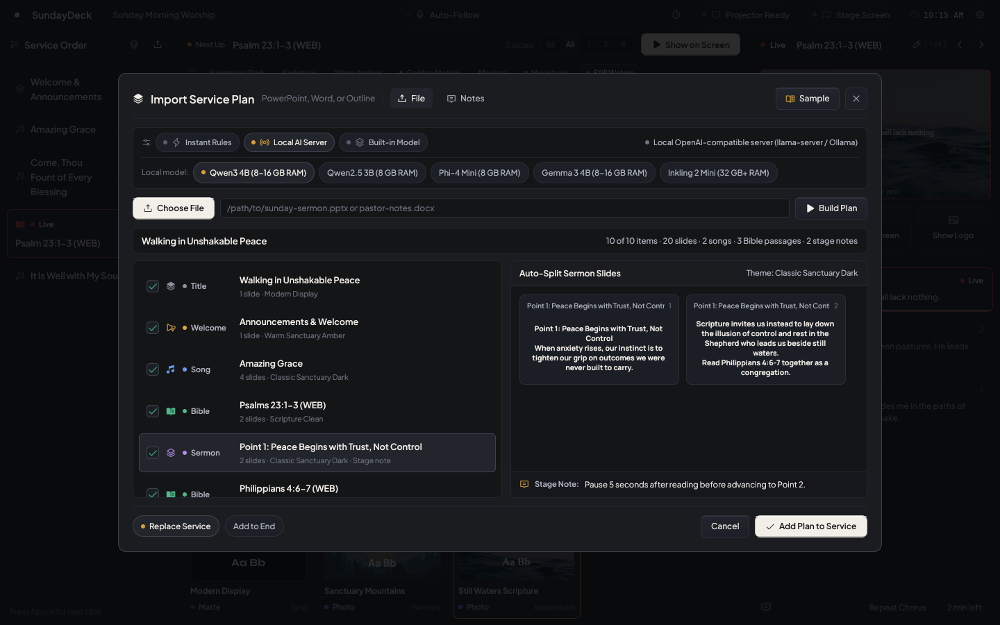

Drop a Pastor's PowerPoint or Word File
Import .pptx, .docx, or sermon notes and automatically map
songs, Scripture references, and sermon points into a reviewable service order —
deterministic out of the box, or boosted with a local LLM (Qwen3 4B, Qwen2.5 3B,
Phi-4 Mini, Gemma 3 4B).